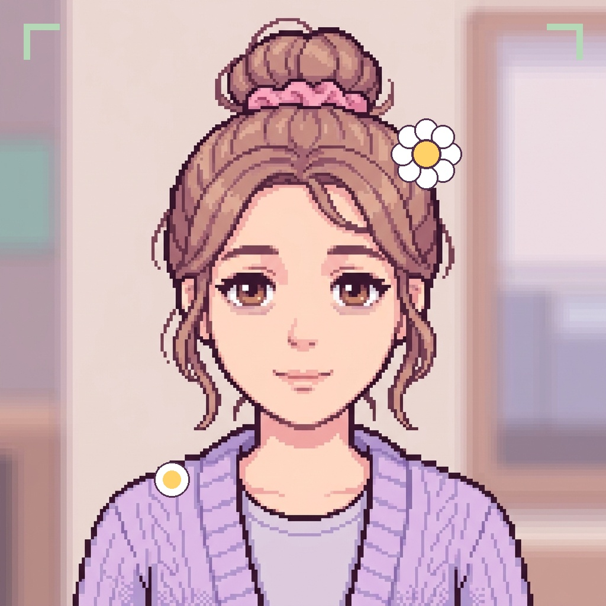
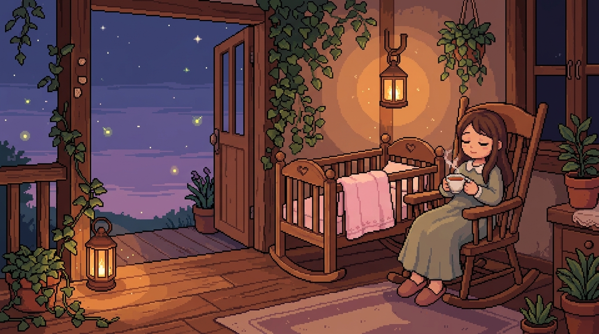
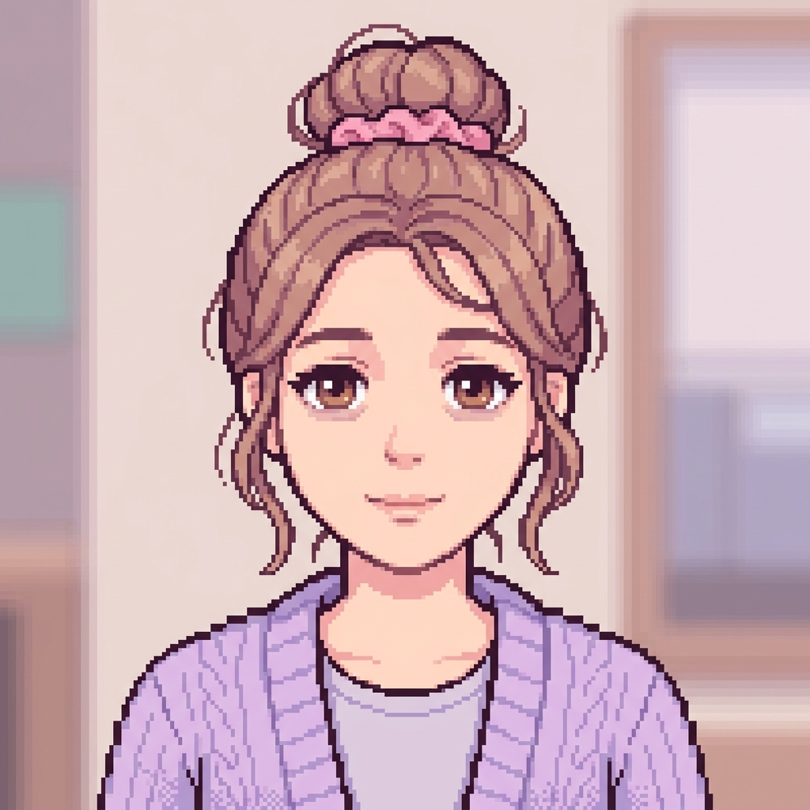
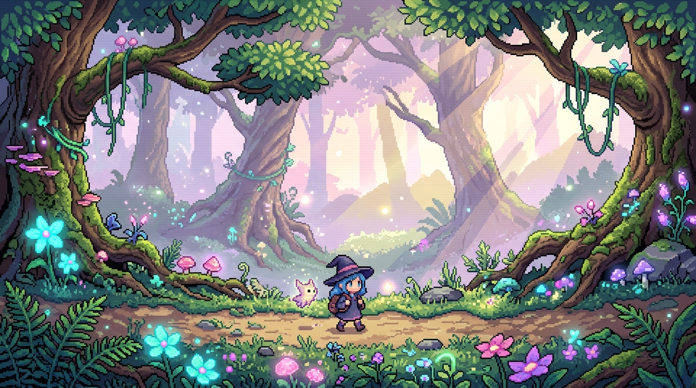

🗓️ The Irregular Rhythm
PCOS often means delayed or absent ovulation. It's not because you did something wrong; follicles simply take longer to mature.
⚡ The Metabolic Fatigue
Up to 70% of PCOS involves insulin resistance. Cravings and post-meal crashes are biochemical, not a lack of willpower.
✨ Hair & Skin Fluctuations
Elevated androgens can cause cystic acne, facial hair, or thinning hair. Real treatments exist—you don't have to just suffer in silence.
🚫 No Universal 'Cure'
PCOS is managed, not erased by detoxes. Supportive nutrition, sleep, and doctor-prescribed care honor your unique body.
Select what you've noticed lately. We'll format these into concise, clinical questions for your doctor visit:
- "Could we check my LH/FSH ratio and evaluate pelvic ultrasound?"
- "Could we evaluate fasting glucose and insulin sensitivity?"
- "Are there specific hormonal tests for my skin and hair symptoms?"


🌧️ 'Baby Blues' (Days 3-14)
80% of new parents experience weepiness and mood swings as estrogen and progesterone plummet right after birth. It peaks within 2 weeks.
⛈️ Postpartum Depression (PPD/PPA)
If intense numbness, dread, insomnia despite exhaustion, or crying last beyond 2 weeks, this is a treatable medical condition, never a character flaw.
💭 Scary Intrusive Thoughts
Unwanted 'what-if' flashes of harm are common symptoms of postpartum anxiety and OCD. They reflect high distress, not true intent.
🛡️ The Caregiver Needs Care
You cannot pour from an empty cup. Protecting parental sleep and mental health directly protects the infant's development.
Saying "Let me know if you need anything" is too vague for an exhausted parent. Pick 2 concrete tasks you want a friend or partner to take off your shoulders:
📋 The Edinburgh Postnatal Depression Scale (EPDS)
A simple, standardized 10-question tool used worldwide by midwives, pediatricians, and OB-GYNs to spot PPD early without judgment.
📞 Confidential Support Lifelines
• Postpartum Support International (PSI): Call/Text 1-800-944-4773 (English & Spanish)
• National Maternal Mental Health Hotline (USA): Call/Text 1-833-852-6262 (24/7 Free & Confidential)
• Crisis Text Line: Text HOME to 741741

Click the soft pastel flowers to ground your senses.
The Changing Mirror: PCOS & PCOD
• Diverse Symptoms: Irregular or absent periods, fatigue, cystic acne, and insulin resistance aren't flaws—they are endocrine communications.
• Lab Work That Counts: Ask for Free/Total Testosterone, Fasting Glucose/Insulin, and a Pelvic Ultrasound.
The Tired Moon: Postpartum Wellbeing
• Medical, Not Moral: PPD and PPA are medical conditions resulting from intense hormonal shifts, not poor mothering.
• Ask for Specifics: Never feel guilty asking for a meal drop-off or a 2-hour sleep shift.
The Foggy Forest: Calming Overwhelm
• 5-4-3-2-1 Sensory Reset: Connect with sight, touch, and sound to pull your nervous system out of an anxiety spiral.
• Pause without Guilt: Pacing yourself is an active form of self-defense.
Your Prepared Cards & Action Items

"You don't have to be the same as everyone else to deserve care."
Design Philosophy & Compassion
Bleuming is a cozy indie game designed for anyone navigating hormonal changes (PCOS/PCOD), postpartum emotional overwhelm, or daily anxiety.
- No AI Slop / No Therapy Cliches: Grounded, human dialogue and practical action steps.
- Dedicated Experiences: Separate, focused spaces for PCOS/PCOD and Postpartum Depression.
- Authentic Pixel Art: Real retro Y2K pixel art assets and 8-bit Web Audio synth.